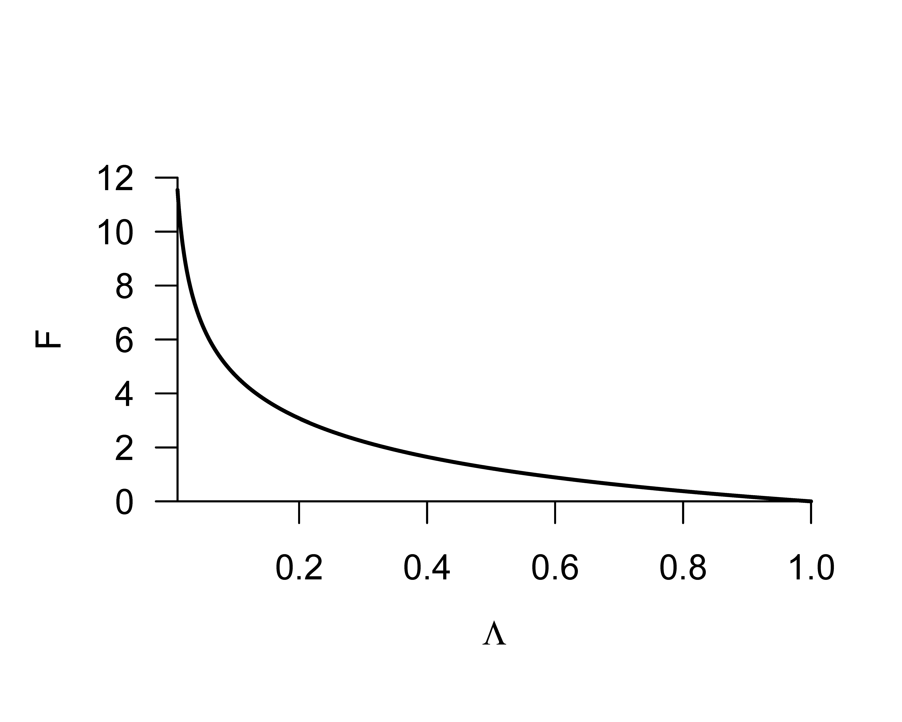
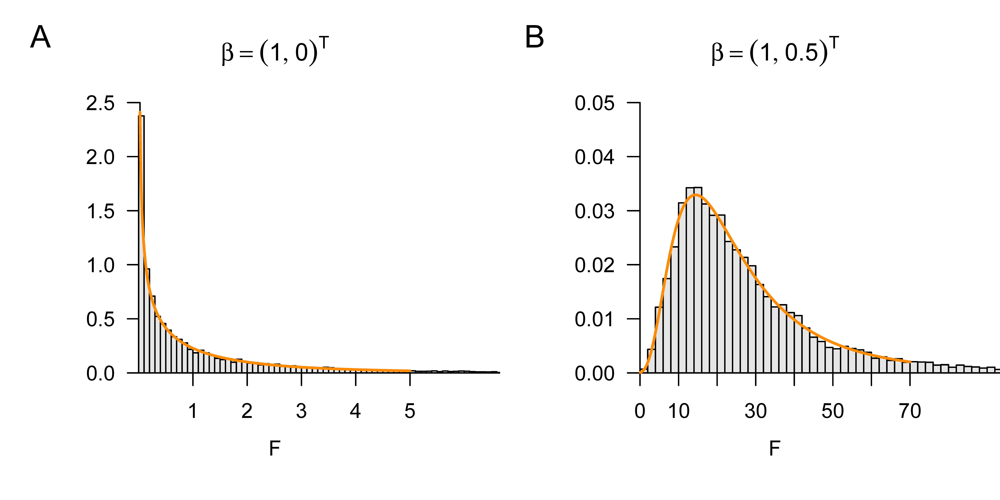

# model formulation
library(MASS) # multivariate normal distribution
set.seed(0) # random number generator seed
nmod = 2 # number of models
n = 10 # number of data points
p = 2 # number of beta parameters
p_0 = 1 # number of beta parameters in the reduced model
p_1 = 1 # number of additional beta parameters in the full model
p = p_0 + p_1 # number of beta parameters in the full model
x = 1:n # predictor values
X = matrix(c(rep(1,n),x), nrow = n) # design matrix of the full model
X_0 = X[,1] # design matrix of the reduced model
I_n = diag(n) # n x n identity matrix
beta = matrix(c(1,0,1,.5), nrow = 2) # true, but unknown, beta parameters
nscn = ncol(beta) # number of true, but unknown, hypothesis scenarios
sigsqr = 1 # true, but unknown, variance parameter
# model simulation and evaluation
Eff = matrix(rep(NaN, nscn), nrow = nscn) # F-statistic realization array
for(s in 1:nscn){ # scenario iterations
y = mvrnorm(1, X %*%beta[,s], sigsqr*I_n) # data realization
beta_hat_0 = solve(t(X_0)%*%X_0)%*%t(X_0)%*%y # beta-parameter estimator, reduced model
beta_hat = solve(t(X) %*%X )%*%t(X) %*%y # beta-parameter estimator, full model
eps_0_hat = y-X_0%*%beta_hat_0 # residual vector, reduced model
eps_hat = y-X%*%beta_hat # residual vector, full model
eps_0_eps_0_hat = t(eps_0_hat) %*% eps_0_hat # RSS, reduced model
eps_eps_hat = t(eps_hat) %*% eps_hat # RSS, full model
Eff[s] = (((eps_0_eps_0_hat-eps_eps_hat)/p_1)/ # F-statistic
(eps_eps_hat/(n-p)))}39 F-statistics
In this section, we introduce F-statistics against the background of model comparisons based on likelihood-ratio statistics. Using the (maximized or marginal) likelihood of a dataset under a given probabilistic model as a model comparison criterion is a widely used procedure in probabilistic data analysis. In contrast to T-statistics, the goal of computing F-statistics can therefore be not only to evaluate linear combinations of beta-parameter estimates probabilistically, but also to evaluate a model’s fit to a dataset as a whole. The model-comparison capacity of F-statistics is, however, somewhat limited because the F-statistic refers only to GLMs and, in particular, to nested GLMs in which one model is part of another model. F-statistics usually form the basis for hypothesis tests in the context of analysis-of-variance procedures. The use of F-statistics is not, however, restricted per se to analyses of variance, but can also be appropriate in parametric GLM designs. In the following, we first introduce the concept of the likelihood-ratio statistic and then consider the definition of the F-statistic against this background. We close with the frequentist distribution of the F-statistic.
39.1 Likelihood-ratio statistics
We define the concept of the likelihood-ratio statistic as follows.
Definition 39.1 (Likelihood-ratio statistic) Let two frequentist inference models \[\begin{equation} \mathcal{M}_{0}:=\left(\mathcal{Y}, \mathcal{A},\left\{\mathbb{P}_{\theta_{0}}^{0} \mid \theta_{0} \in \Theta_{0}\right\}\right) \mbox{ and } \mathcal{M}_{1}:=\left(\mathcal{Y}, \mathcal{A},\left\{\mathbb{P}_{\theta_{1}}^{1} \mid \theta_{1} \in \Theta_{1}\right\}\right) \end{equation}\] be given, with identical data space, identical \(\sigma\)-algebra, and potentially distinct sets of probability measures and parameter spaces. Furthermore, let \(y\) be a random vector with data space \(\mathcal{Y}\). Finally, let \(L_{0}^{y}\) and \(L_{1}^{y}\) be the likelihood functions of \(\mathcal{M}_{0}\) and \(\mathcal{M}_{1}\), respectively, where the superscript \({ }^{y}\) is meant to recall the data dependence of the likelihood function. Then \[\begin{equation} \Lambda:=\frac{\max _{\theta_{0} \in \Theta_{0}} L_{0}^{y}\left(\theta_{0}\right)}{\max _{\theta_{1} \in \Theta_{1}} L_{1}^{y}\left(\theta_{1}\right)} \end{equation}\] is called the likelihood-ratio statistic.
A likelihood-ratio statistic relates the probability mass or density of an observed dataset \(y \in \mathcal{Y}\) under two frequentist inference models after optimization of the respective model parameters. A high value of the likelihood-ratio statistic corresponds to a higher probability mass or density of the observed dataset \(y \in \mathcal{Y}\) under \(\mathcal{M}_{0}\) than under \(\mathcal{M}_{1}\), and vice versa.
Considering the probability masses or densities of observed data after model estimation under different models is a general procedure for comparing models. Ultimately, this procedure makes it possible to compare different scientific theories about the genesis of observable data quantitatively and to quantify the associated uncertainty. Model comparisons are a central topic in Bayesian inference, which generalizes the logic of likelihood-ratio statistics to general probabilistic models, for example under the terms Bayes factors or Bayesian information criterion. However, as seen here, model comparisons are also possible and useful in frequentist inference; model comparison is therefore not a unique feature of Bayesian inference relative to frequentist inference.
With the reduced model and the full model, we consider in the following two special forms of \(\mathcal{M}_{0}\) and \(\mathcal{M}_{1}\), respectively, in the context of the GLM.
Definition 39.2 (Full and reduced model) For \(p>1\) with \(p=p_{0}+p_{1}\), let \[\begin{equation} X := \begin{pmatrix} X_{0} & X_{1} \end{pmatrix} \in \mathbb{R}^{n \times p} \mbox{ with } X_{0} \in \mathbb{R}^{n \times p_{0}} \mbox{ and } X_{1} \in \mathbb{R}^{n \times p_{1}} \end{equation}\] and \[\begin{equation} \beta := \begin{pmatrix} \beta_{0} \\ \beta_{1} \end{pmatrix} \in \mathbb{R}^{p} \mbox{ with } \beta_{0} \in \mathbb{R}^{p_{0}} \mbox{ and } \beta_{1} \in \mathbb{R}^{p_{1}} \end{equation}\] be partitions of an \(n \times p\) design matrix and a \(p\)-dimensional beta-parameter vector. Then we call \[\begin{equation} y = X\beta+\varepsilon \mbox{ with } \varepsilon \sim N\left(0_{n}, \sigma^{2} I_{n}\right) \end{equation}\] the full model and \[\begin{equation} y = X_{0}\beta_{0} + \varepsilon_{0} \mbox{ with } \varepsilon_{0} \sim N\left(0_{n}, \sigma^{2} I_{n}\right) \end{equation}\] the reduced model, and we speak of a partition of a (full) model.
One also says that the reduced model is nested in the full model. The likelihood-ratio statistic for comparing a full and a reduced model has a simple form. This is the central aspect of the following theorem.
Theorem 39.1 (Likelihood-ratio statistic of full and reduced model) For \(p=p_{0}+p_{1}, p>1\), let a partition of a full GLM be given, and let \(\hat{\sigma}^{2}\) and \(\hat{\sigma}_{0}^{2}\) be the maximum-likelihood estimators of the variance parameter under the full and reduced model, respectively. Furthermore, let the two parametric statistical models \(\mathcal{M}_{0}\) and \(\mathcal{M}_{1}\) in the definition of the likelihood-ratio statistic be given by the reduced model and the full model. Then \[\begin{equation} \Lambda=\left(\frac{\hat{\sigma}^{2}}{\hat{\sigma}_{0}^{2}}\right)^{\frac{n}{2}}. \end{equation}\]
Proof. We first recall that the maximum-likelihood estimators of the variance parameter are given by \[\begin{equation} \hat{\sigma}^{2}=\frac{1}{n}(y-X \hat{\beta})^{T}(y-X \hat{\beta}) \mbox{ and } \hat{\sigma}_{0}^{2}=\frac{1}{n}\left(y-X_{0} \hat{\beta}_{0}\right)^{T}\left(y-X_{0} \hat{\beta}_{0}\right), \end{equation}\] respectively, where \(\hat{\beta}\) and \(\hat{\beta}_{0}\) denote the maximum-likelihood estimators of the beta parameters under the full and reduced model, respectively. Furthermore, we note that for the likelihood function of the full model at the maximum-likelihood estimators, \[\begin{equation} \begin{aligned} L_{1}^{y}\left(\hat{\beta}, \hat{\sigma}^{2}\right) & =(2 \pi)^{-\frac{n}{2}}\left(\hat{\sigma}^{2}\right)^{-\frac{n}{2}} \exp \left(-\frac{1}{2 \hat{\sigma}^{2}}(y-X \hat{\beta})^{T}(y-X \hat{\beta})\right) \\ & =(2 \pi)^{-\frac{n}{2}}\left(\hat{\sigma}^{2}\right)^{-\frac{n}{2}} \exp \left(-\frac{n}{2} \frac{(y-X \hat{\beta})^{T}(y-X \hat{\beta})}{(y-X \hat{\beta})^{T}(y-X \hat{\beta})}\right) \\ & =(2 \pi)^{-\frac{n}{2}}\left(\hat{\sigma}^{2}\right)^{-\frac{n}{2}} e^{-\frac{n}{2}}, \end{aligned} \end{equation}\] and, analogously, that for the likelihood function of the reduced model at the maximum-likelihood estimators, \[\begin{equation} L_{0}^{y}\left(\hat{\beta}_{0}, \hat{\sigma}_{0}^{2}\right)=(2 \pi)^{-\frac{n}{2}}\left(\hat{\sigma}_{0}^{2}\right)^{-\frac{n}{2}} e^{-\frac{n}{2}}. \end{equation}\] This yields \[\begin{equation} \Lambda = \frac{\max _{\theta_{0} \in \Theta_{0}} L_{0}^{y}\left(\theta_{0}\right)}{\max _{\theta_{1} \in \Theta_{1}} L_{1}^{y}\left(\theta_{1}\right)} = \frac{L_{0}^{y}\left(\hat{\beta}_{0}, \hat{\sigma}_{0}^{2}\right)}{L_{1}^{y}\left(\hat{\beta}, \hat{\sigma}^{2}\right)} = \frac{(2 \pi)^{-\frac{n}{2}}\left(\hat{\sigma}_{0}^{2}\right)^{-\frac{n}{2}} e^{-\frac{n}{2}}}{(2 \pi)^{-\frac{n}{2}}\left(\hat{\sigma}^{2}\right)^{-\frac{n}{2}}e^{-\frac{n}{2}}} =\left(\frac{\hat{\sigma}_{0}^{2}}{\hat{\sigma}^{2}}\right)^{-\frac{n}{2}}=\left(\frac{\hat{\sigma}^{2}}{\hat{\sigma}_{0}^{2}}\right)^{\frac{n}{2}}. \end{equation}\]
39.2 Definition and distribution
We now define the F-statistic against the background of a full and a reduced model.
Definition 39.3 (F-statistic) For \(X \in \mathbb{R}^{n \times p}, \beta \in \mathbb{R}^{p}\) and \(\sigma^{2}>0\), let a GLM of the form \[\begin{equation} y = X\beta+\varepsilon \mbox{ with } \varepsilon \sim N\left(0_{n}, \sigma^{2} I_{n}\right) \end{equation}\] be given with the partition \[\begin{equation} X=\begin{pmatrix} X_{0} & X_{1} \end{pmatrix}, X_{0} \in \mathbb{R}^{n \times p_{0}}, X_{1} \in \mathbb{R}^{n \times p_{1}}, \mbox{ and } \beta:=\begin{pmatrix} \beta_{0} \\ \beta_{1} \end{pmatrix}, \beta_{0} \in \mathbb{R}^{p_{0}}, \beta_{1} \in \mathbb{R}^{p_{1}}, \end{equation}\] with \(p=p_{0}+p_{1}\). Furthermore, with \[\begin{equation} \hat{\beta}_{0} :=\left(X_{0}^{T} X_{0}\right)^{-1} X_{0}^{T}y \mbox{ and } \hat{\beta}:=\left(X^{T} X\right)^{-1}X^{T}y, \end{equation}\] let the residual vectors \[\begin{equation} \hat{\varepsilon}_{0}:=y-X_{0} \hat{\beta}_{0} \mbox{ and } \hat{\varepsilon}:=y-X \hat{\beta} \end{equation}\] be defined. Then the F-statistic is defined as \[\begin{equation} F:=\frac{\left(\hat{\varepsilon}_{0}^{T} \hat{\varepsilon}_{0}-\hat{\varepsilon}^{T} \hat{\varepsilon}\right) / p_{1}}{\hat{\varepsilon}^{T} \hat{\varepsilon} /(n-p)}. \end{equation}\]
The numerator of the F-statistic, \[\begin{equation} \frac{\hat{\varepsilon}_{0}^{T} \hat{\varepsilon}_{0}-\hat{\varepsilon}^{T} \hat{\varepsilon}}{p_{1}}, \end{equation}\] measures the extent to which the \(p_{1}\) regressors in \(X_{1}\) reduce the residual sum of squares, relative to the number of these regressors. This means that, for the same magnitude of residual-sum-of-squares reduction (and the same denominator), a larger value of \(F\) results when this reduction is achieved by fewer additional regressors, that is, when \(p_{1}\) is small, and vice versa. In terms of the number of columns of \(X\) and the corresponding components of \(\beta\), the F-statistic therefore favors less “complex” models.
For the denominator of the F-statistic, \[\begin{equation} \frac{\hat{\varepsilon}^{T} \hat{\varepsilon}}{n-p}=\hat{\sigma}^{2}, \end{equation}\] where \(\hat{\sigma}^{2}\) is here the estimator of \(\sigma^{2}\) estimated on the basis of the full model. Note that this estimator is not identical to the maximum-likelihood estimator of the variance parameter considered above, whose denominator is \(n\), because of the denominator \(n-p\). If the data are in fact generated under the reduced model, the full model can represent this by \(\widehat{\beta}_{2} \approx 0_{p_{1}}\) and achieves a similar estimate of \(\sigma^{2}\) as the reduced model. If the data are de facto generated under the full model, then \(\hat{\varepsilon}^{T} \hat{\varepsilon} /(n-p)\) is a better estimator of \(\sigma^{2}\) than \(\hat{\varepsilon}_{0}^{T} \hat{\varepsilon}_{0} /(n-p)\), because in the latter the data variability not explained by the \(p_{0}\) regressors in \(X_{0}\) would be reflected in the estimate of \(\sigma^{2}\). The denominator of the F-statistic is therefore the more meaningful estimator of \(\sigma^{2}\) in both cases.
Taken together, the F-statistic thus measures the residual-sum-of-squares reduction due to the \(p_{1}\) regressors in \(X_{1}\) relative to the \(p_{0}\) regressors in \(X_{0}\) per unit of data variability \(\left(\sigma^{2}\right)\) and per regressor \(\left(p_{1}\right)\).
Example (1) Simple linear regression
As an example, the R code below evaluates the F-statistic in the context of the following partition of the simple linear regression model, \[\begin{equation} X=\begin{pmatrix} X_{0} & X_{1} \end{pmatrix}, X_{0}:=1_{n}, X_{1}:=\left(x_{1}, \ldots, x_{n}\right)^{T}, \beta:=\begin{pmatrix} \beta_{0} \\ \beta_{1} \end{pmatrix}, \end{equation}\] once for the case \(\beta=(1,0)^{T}\), that is, the reduced model is the true, but unknown, data-generating model, and once for the case \(\beta=(1,0.5)^{T}\), that is, the full model is the true, but unknown, data-generating model. In the sense of the above discussion, the first case yields an F-statistic close to zero, whereas the second case yields a high F-statistic.
F-statistic for beta_1 = 0_{p_1}: 0.03223958
F-statistic for beta_1 != 0_{p_1}: 47.8873The likelihood-ratio statistic and the F-statistic of full and reduced models can be transformed into one another. This is the central statement of the following theorem.
Theorem 39.2 (F-statistic and likelihood-ratio statistic) Let a partition of a GLM into a full and a reduced model be given, and let \(F\) and \(\Lambda\) be the corresponding F- and likelihood-ratio statistics. Then \[\begin{equation} F=\frac{n-p}{p_{1}}\left(\Lambda^{-\frac{2}{n}}-1\right). \end{equation}\]
Proof. We first recall that the maximum-likelihood estimators of the variance parameter are given by \[\begin{equation} \hat{\sigma}^{2} = \frac{1}{n}(y - X \hat{\beta})^{T}(y-X \hat{\beta}) = \frac{\hat{\varepsilon}^{T} \hat{\varepsilon}}{n} \text { and } \hat{\sigma}_{0}^{2} = \frac{1}{n}\left(y-X_{0} \hat{\beta}_{0}\right)^{T}\left(y-X_{0} \hat{\beta}_{0}\right) = \frac{\hat{\varepsilon}_{0}^{T} \hat{\varepsilon}_{0}}{n} \end{equation}\] respectively. With the definition of the F-statistic and the form of the likelihood-ratio statistic for comparing reduced and full models, we obtain \[\begin{align} \begin{split} F & =\frac{\left(\hat{\varepsilon}_{0}^{T} \hat{\varepsilon}_{0}-\hat{\varepsilon}^{T} \hat{\varepsilon}\right) / p_{1}}{\hat{\varepsilon}^{T} \hat{\varepsilon} /(n-p)} \\ & =\frac{n\left(\hat{\sigma}_{0}^{2}-\hat{\sigma}^{2}\right) / p_{1}}{n \hat{\sigma}^{2} /(n-p)} \\ & =\frac{n-p}{p_{1}} \frac{\hat{\sigma}_{0}^{2}-\hat{\sigma}^{2}}{\hat{\sigma}^{2}} \\ & =\frac{n-p}{p_{1}}\left(\frac{\hat{\sigma}_{0}^{2}}{\hat{\sigma}^{2}}-\frac{\hat{\sigma}^{2}}{\hat{\sigma}^{2}}\right) \\ & =\frac{n-p}{p_{1}}\left(\Lambda^{-\frac{2}{n}}-1\right). \end{split} \end{align}\]
Thus, between the F-statistic and the likelihood-ratio statistic there is a nonlinear, reciprocal relationship, which we visualize for \(n=12, p=2\) and \(p_{1}=1\) in Figure 39.1. Note that for \(\Lambda=1\), \(F=0\). A value of \(F=0\) therefore implies that the reduced model has the same plausibility as the full model in light of an observed dataset.

We document the frequentist distribution of the F-statistic in the following theorem, whose proof we omit.
Theorem 39.3 (F-statistic) For \(X \in \mathbb{R}^{n \times p}, \beta \in \mathbb{R}^{p}\) and \(\sigma^{2}>0\), let a GLM of the form \[\begin{equation} y = X\beta+\varepsilon \mbox{ with } \varepsilon \sim N\left(0_{n}, \sigma^{2} I_{n}\right) \end{equation}\] be given with the partition \[\begin{equation} X = \begin{pmatrix} X_{0} & X_{1} \end{pmatrix}, X_{0} \in \mathbb{R}^{n \times p_{0}}, X_{1} \in \mathbb{R}^{n \times p_{1}}, \mbox{ and } \beta := \begin{pmatrix} \beta_{0} \\ \beta_{1} \end{pmatrix}, \beta_{0} \in \mathbb{R}^{p_{0}}, \beta_{1} \in \mathbb{R}^{p_{1}}, \end{equation}\] with \(p=p_{0}+p_{1}\). Finally, let \[\begin{equation} c := \begin{pmatrix} 0_{p_{0}} \\ 1_{p_{1}} \end{pmatrix} \in \mathbb{R}^{p} \end{equation}\] be a vector. Then \[\begin{equation} F \sim f\left(\delta, p_{1}, n-p\right) \mbox{ with } \delta:=\frac{c^{T} \beta\left(c^{T}\left(X^{T} X\right)^{-1} c\right)^{-1} c^{T} \beta}{\sigma^{2}}. \end{equation}\]
Note that the F-statistic is a function of the parameter estimator, whereas \(\delta\) is a function of the true, but unknown, parameters. Like the distribution of the T-statistic, the distribution of the F-statistic can be used for the evaluation of frequentist confidence intervals and hypothesis tests. We illustrate the latter aspect in particular in Chapter 41 and Chapter 42.
Example (1) Simple linear regression
As an example, using the R code below we evaluate the distribution of the F-statistic in the context of the partition of the simple linear regression model, again once for the case \(\beta=(1,0)^{T}\), that is, the reduced model is the true, but unknown, data-generating model, and once for the case \(\beta=(1,0.5)^{T}\), that is, the full model is the true, but unknown, data-generating model. Figure 39.2 A and B visualize the resulting distributions, respectively.
# model formulation
library(MASS) # multivariate normal distribution
set.seed(0) # random number generator seed
nmod = 2 # number of models
n = 10 # number of data points
p_0 = 1 # number of beta parameters in the reduced model
p_1 = 1 # number of additive beta parameters in the full model
p = p_0 + p_1 # number of beta parameters in the full model
x = 1:n # predictor values
X = matrix(c(rep(1,n),x), nrow = n) # design matrix of the full model
X_0 = X[,1] # design matrix of the reduced model
I_n = diag(n) # n x n identity matrix
beta = matrix(c(1,0,1,.5), nrow = 2) # true, but unknown, beta parameters
nscn = ncol(beta) # number of true, but unknown, hypothesis scenarios
sigsqr = 1 # true, but unknown, variance parameter
c = matrix((c(0,1)), nrow = 2) # vector
# frequentist simulation
nsim = 1e4 # number of realizations of the n-dimensional random vector
delta = rep(NaN,nscn) # noncentrality-parameter array
Eff = matrix(rep(NaN, nscn*nsim), nrow = nscn) # F-statistic realization array
for(s in 1:nscn){ # scenario iterations
delta[s] = (t(t(c)%*%beta[,s])%*% # noncentrality parameter
solve(t(c)%*%solve(t(X)%*%X)%*%c) %*%
(t(c)%*%beta[,s])/sigsqr)
for(i in 1:nsim){ # simulation iterations
y = mvrnorm(1, X %*%beta[,s], sigsqr*I_n) # data realization
beta_hat_0 = solve(t(X_0)%*%X_0)%*%t(X_0)%*%y # beta-parameter estimator, reduced model
beta_hat = solve(t(X) %*%X )%*%t(X) %*%y # beta-parameter estimator, full model
eps_0_hat = y-X_0%*%beta_hat_0 # residual vector, reduced model
eps_hat = y-X%*%beta_hat # residual vector, full model
eps_0_eps_0_hat = t(eps_0_hat) %*% eps_0_hat # RSS, reduced model
eps_eps_hat = t(eps_hat) %*% eps_hat # RSS, full model
Eff[s,i] = (((eps_0_eps_0_hat-eps_eps_hat)/p_1)/ # F-statistic
(eps_eps_hat/(n-p)))}}
39.3 Bibliographic remarks
The popularity of F-statistics, especially in the context of analysis of variance, is generally traced back to Fisher (1925). Seal (1967) gives a historical overview. Likelihood-ratio statistics are considered in particular by Neyman & Pearson (1928) and Wilks (1938). Lehmann (2011) gives an integrated historical overview of both approaches. The equivalence of likelihood-ratio statistic and F-statistic discussed here is based on the presentation in Seber & Lee (2003).
Fisher, R. A. (1925). Applications of "Student’s" distribution. Metron, 5, 90–104.
Lehmann, E. L. (2011). Fisher, Neyman, and the Creation of Classical Statistics. Springer New York. https://doi.org/10.1007/978-1-4419-9500-1
Neyman, J., & Pearson, E. S. (1928). On the Use and Interpretation of Certain Test Criteria for Purposes of Statistical Inference: Part I. Biometrika, 20A(1/2), 175. https://doi.org/10.2307/2331945
Seal, H. L. (1967). Studies in the History of Probability and Statistics. XV: The Historical Development of the Gauss Linear Model. Biometrika, 54(1/2), 1. https://doi.org/10.2307/2333849
Seber, G. A. F., & Lee, A. J. (2003). Linear regression analysis (2nd ed). Wiley-Interscience.
Wilks, S. S. (1938). The Large-Sample Distribution of the Likelihood Ratio for Testing Composite Hypotheses. The Annals of Mathematical Statistics, 9(1), 60–62. https://doi.org/10.1214/aoms/1177732360